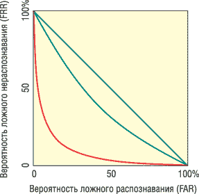

Андрей Вакуленко, НПО "Информация"
Артем Юхин, A4Vision
Стремительно врываясь в нашу жизнь, новые технологии меняют и язык, порой придавая новые значения уже известным терминам. Еще недавно термин "биометрия" имел гораздо более широкое толкование и относился к методам математической статистики, примененным к любым биологическим явлениям. Теперь его значение стало более узким - под биометрическими технологиями понимают автоматические или автоматизированные методы распознавания личности человека по его биологическим характеристикам или проявлениям.
Сегодня стала очевидной необходимость точной идентификации в местах массового скопления людей, при контроле пропусков и сверке документов. В первую очередь проблема коснулась безопасности транспортных систем - аэропортов, вокзалов, морских портов, метрополитена, а также государственных и межгосударственных систем - паспортно-визовых, таможенных, миграционных и оперативных служб. Обычных паспортов и фейс-контроля стало явно недостаточно. Все надежды теперь связаны с использованием биометрических технологий, позволяющих проверять личности огромного количества людей, проходящих через точку контроля.
С января 2004 г. в США началась программа US-Visit. Сначала все прибывающие в США иностранцы были обязаны проходить процедуру биометрической идентификации личности, теперь такую же процедуру им придется проходить и на выезде из США. В ЕС и России готовятся к введению электронных паспортов, содержащих биометрическую информацию, планируется также введение единого европейского водительского удостоверения с биометрической информацией. Аналогичные программы начались во многих странах Азии.
Активно развивается международная нормативная техническая и правовая база. Практически сразу после 11 сентября 2001 г. при Международной организации по стандартам (ISO) создан подкомитет SC37 по биометрии, призванный оперативно разработать и утвердить единые международные стандарты использования, обмена и хранения биометрических данных. Аналогичные комитеты созданы во многих национальных органах по стандартам. Одним из первых появился комитет M1 при Американском национальном институте стандартов (ANSI), аналогичный подкомитет ПК7 создан в Федеральном агентстве по техническому регулированию и метрологии России.
Международная организация гражданской авиации ICAO также активно начала разработку и внедрение отраслевого стандарта по использованию биометрических методов распознавания личности в паспортно-визовых документах.
Несмотря на лавинный и стремительный спрос на биометрию, необходимо объективно и взвешенно ответить на главный вопрос - а насколько готовы сами технологии, совсем еще молодые, справиться с возложенными на них задачами? Необходимо сформулировать критерии качества биометрической системы, методы их оценки и определить требования для того или иного применения. Этому и посвящена данная статья.
Сравнение по совокупности критериев
Основные составляющие биометрического метода - это сканер для измерения биометрической характеристики и алгоритм, позволяющий сравнить ее с предварительно зарегистрированной той же характеристикой (так называемым биометрическим шаблоном).
Возможны два режима работы системы - верификация (сравнение одного с одним) и идентификация (сравнение одного с многими).
При верификации пользователь вводит имя, пароль или другим способом объявляет системе, "кто он такой". Задача системы в этом случае - проверить достоверность этой информации, т. е. сверить измеряемую биометрическую характеристику с имеющимся шаблоном заявленного индивидуума.
При идентификации пользователь просто "предъявляет биометрику", и задача алгоритма - решить, известен ли пользователь системе и кто он. В этом случае измеряемая биометрическая характеристика сравнивается с базой данных ранее записанных шаблонов.
При всем теоретическом многообразии возможных биометрических методов применимых на практике среди них немного. Основных методов три - распознавание по отпечатку пальца, по изображению лица (двухмерному или трехмерному - 2D- или 3D-фото) и по радужной оболочке глаза.
Попробуем сравнить основные биометрические методы. В табл. 1 сведены качественные характеристики различных биометрических методов. Для сравнения используются те критерии, которым должен в той или иной степени отвечать любой биометрический метод.
Таблица 1. Характеристики биометрических методов
| Универсальность | Уникальность | Перманентность | Измеримость | Устойчивость к окружающей среде | Устойчивость к подделке | Социальная приемлемость | Точность | |
| Радужная оболочка | Хорошо | Отлично | Отлично | Плохо | Хорошо | Плохо | Плохо | Хорошо |
| Палец | Хорошо | Хорошо | Хорошо | Плохо | Плохо | Плохо | Плохо | Хорошо |
| Лицо (3D) | Отлично | Хорошо | Хорошо | Хорошо | Хорошо | Отлично | Отлично | Хорошо |
| Лицо (2D) | Отлично | Плохо | Плохо | Хорошо | Плохо | Плохо | Отлично | Плохо |
Рассмотрим подробнее каждый из критериев.
Универсальность. Каждый человек должен обладать той характеристикой, которая требуется для данного биометрического метода. В действительности у каждого метода есть ограничения, поскольку некоторые люди в принципе не могут его использовать (например, те, у кого нет пальца или глаза).
Уникальность (различимость). Характеристика не должна быть одинаковой у двух разных людей. Уникальность можно определить как минимально достижимое для данной биометрии значение FAR (False Acceptance Rate) - вероятности ложного распознавания, т. е. вероятности того, что система спутает двух индивидуумов, признав "чужого" за "своего". На практике уменьшение FAR всегда приводит к уменьшению чувствительности метода или, что эквивалентно, к увеличению FRR (False Rejection Rate) - вероятности ложного нераспознавания, т. е. того, что система не распознает знакомого ей субъекта. Таким образом, минимально достижимое значение FAR соответствует очень высокому значению FRR и не является показательным.
Перманентность. Биометрическая характеристика не должна меняться во времени (так называемое старение биометрического шаблона). Оценить перманентность биометрического метода можно зависимостью FRR (при фиксированном значении FAR) от времени между тестами, проведенными на одной и той же выборке индивидуумов.
Измеримость. Ее можно количественно оценить величиной FTE (Failure to enroll) - процентом индивидуумов, которые не смогли пройти регистрацию (система не смогла построить биометрический шаблон), и средним временем распознавания (recognition_time). Под временем распознавания подразумевается время верификации либо идентификации, в зависимости от режима, в котором работает система. При решении задач контроля доступа, особенно на транспорте, время распознавания напрямую определяет скорость потока через контролируемую точку. FTE определяет процент людей, которые не смогут воспользоваться системой, т. е. будут блокировать проход. Сюда входят и те случаи, когда у индивидуумов нужная биометрическая характеристика отсутствует (см. "Универсальность"), но главным образом случаи, когда характеристика есть, но по тем или иным причинам ее измерение у данного человека на данном сканере затруднено.
Для многих людей затруднено распознавание по отпечатку пальца - для работников физического труда, людей со слабо выраженными и стертыми папиллярными узорами, для пожилых людей с сухой кожей или людей с дерматологическими дефектами. Кроме того, из-за постоянного контакта сканеры отпечатков пальцев часто загрязняются.
Устойчивость к окружающей среде. Биометрический метод должен быть устойчив к изменению окружающей среды. Эксплуатационные качества разных биометрических методов сильно зависят от окружающих условий и могут терять стабильность при изменении этих условий. Так, сканеры отпечатков пальцев постоянно загрязняются и качество работы их падает, двухмерные методы распознавания лица сильно зависят от внешней освещенности и т. д.
Устойчивость к подделке. Биометрическая система должна быть устойчивой к подделке (несанкционированному доступу). Систему распознавания по двухмерному (2D) изображению лица можно легко "обмануть", предъявив фотографию "правильного" человека, из числа знакомых системе. Для получения несанкционированного доступа по отпечатку пальца бывает достаточно просто подышать на оставленный на сканере отпечаток пальца или нанести графитовую пудру и надавить через тонкую пленку.
Социальная приемлемость. Согласие общества на сбор и использование тех или иных биометрических данных - необходимое условие массового внедрения биометрических методов. Существуют разные причины, по которым сбор и хранение определенных биометрических характеристик может оказаться неприемлем для общества. Например, отпечатки пальцев традиционно ассоциируются с расследованием преступлений. Для многих существенно и то, что распознавание по отпечаткам пальцев - контактный способ, он требует соприкосновения со сканером, используемым другими людьми. Другой серьезный недостаток отпечатков пальцев - это возможность их кражи и использования не только для несанкционированного доступа, но и для фальсификации улик. Возражения против распознавания по радужной оболочке глаза связаны с возможностями иридодиагностики и получения тем самым частной информации о человеке.
Двухмерная фотография лица наиболее приемлема для общества, поскольку представляет собой бесконтактный и наиболее традиционный способ идентификации личности. Трехмерная цифровая фотография в этом смысле ничем не отличается от обычной, но повышает точность автоматической идентификации. Внешность человека, в отличие от других характеристик, - его наиболее естественный идентификатор, который может использоваться оператором-человеком для проверки решения, выданного компьютером.
Точность. Любую биометрическую систему можно настроить на разную степень "бдительности", т. е. на разное значение вероятности ложного распознавания FAR. При этом, как уже упоминалось, чем ниже FAR, т. е. чем бдительнее система, тем выше вероятность ложного нераспознавания FRR (система менее чувствительна). В зависимости от конкретной задачи система настраивается на определенный компромисс между допустимыми значениями FAR и FRR, или, как их принято называть в теории статистических решений, ошибками 1-го и 2-го рода.
Для оценки точности работы любой биометрической системы принято использовать характеристическую кривую. Характеристическая кривая, или ROC-кривая (Receiver Operating Characteristic) устанавливает зависимость между ошибками 1-го и 2-го рода: FRR (FAR). Примеры ROC-кривых в условном виде приведены на рисунке. Метод с характеристической кривой 1, очевидно, более эффективен, чем метод с характеристической кривой 2.
|  | Примеры ROC-кривых.
|
При анализе и сравнении ROC-кривых очень важно понимать, по какой методике тестирования они получены, в частности, каковы были условия, обстоятельства тестирования, сценарий использования системы, исходная совокупность тестируемых людей и т. д. В зависимости от методики различают технологическое, сценарное и операционное тестирование. Результаты, полученные по разным методикам тестирования, могут сильно различаться для одной и той же системы.
Обычно для любого конкретного приложения можно зафиксировать допустимое значение FAR, и тогда значение FRR будет служить интегральным критерием точности для данной системы.
Приблизительные значения точности в режиме операционного тестирования для основных биометрических методов приведены в табл. 2.
Таблица 2. Точность (%) биометрических методов
| Метод | 3D Лицо | 2D Лицо | Отпечаток пальца* (один палец) | Радужная оболочка | |||
| FAR | FRR A4Vision | FRR (лучший 2D алгоритм) | FRR сканер 1 | FRR сканер 2 | FRR сканер 3 | FRR сканер 4 | FRR (лучший сканер)** |
| 10-3 (0,1%) | 0,2 | 19 | 0,4 | 1,5 | 5 | 8 | 4,7 |
| 10-4 (0,01%) | 1 | 28 | 1 | 2 | 7 | 10 | 5,3 |
| 10-5 (0,001%) | 1,5 | - | 1,3 | 3 | 8 | 14 | 6 |
| * См. FpVTE 2003 results (http://fpvte.nist.gov); ** см. IBG ITIRT 2005, p.92, Figure 66 Cross-Visit Recognition Comparison Results (Single-Attempt). | |||||||
Отметим, что показатели меняются в зависимости от производителя и погрешности тестирования, но важно то, что три метода распознавания - по отпечатку пальца, по трехмерному изображению лица, по радужной оболочке глаза - обладают сравнимой точностью. При этом распознавание по двухмерному изображению лица уступает перечисленным методам по точности на порядок, равно как и другие, отсутствующие в табл. 2, биометрические методы (распознавания по геометрии руки, по голосу и т. д.). С другой стороны, двухмерное изображение лица наиболее удобно для визуального сравнения оператором.
Комбинированные системы
Приведенные выше вероятности ошибки ложного распознавания FAR соответствуют случаю верификации, т. е. сравнению двух биометрических шаблонов между собой. Для большинства практических задач точность, достигаемая в этом случае, при любом из трех методов вполне достаточна.
В случае идентификации вероятность ложного распознавания FAR увеличивается пропорционально количеству человек в базе данных системы при той же чувствительности (FRR). Так, если при FRR, равном 1,3%, лучший пальцевый сканер в режиме верификации обеспечивает значение FAR 0,001% (один шанс из 100 000), то в режиме идентификации при том же FRR и базе данных в 10 000 человек FAR составляет 10% (один шанс из 10), что уже недопустимо для большинства приложений.
Таким образом, в режиме идентификации при базах данных до 1000 или 2000 человек некоторые методы (распознавание по пальцам, 3D-фото, радужной оболочке) могут обеспечить приемлемую точность для систем контроля доступа. При базах данных объемом более 1000-2000 человек ни один из биометрических методов в чистом виде неприменим для большинства задач. Для увеличения точности в режиме идентификации целесообразно использовать несколько биометрических методов одновременно.
Одно из наиболее распространенных "мультимодальных" решений - распознавание по отпечаткам нескольких пальцев. Точность, достигаемая в случае пяти пальцев, пока недостижима для комбинаций других методов. Несмотря на это, практическое использование таких систем ограничено по ряду описанных выше критериев.
Международный подкомитет по стандартизации в области биометрии (ISO/IEC JTC1/SC37 Biometrics) разрабатывает единый формат данных для автоматического распознавания лиц, включающий двух- и трехмерные изображения. Некоторые производители уже начали интеграцию этих двух методов. Вероятнее всего, что вскоре распознавание лица с использованием обоих источников информации будет рассматриваться как один биометрический метод.
Объединение 2D- и 3D-методов распознавания лица позволяет объединить и преимущества этих способов. Так, комбинированный метод с использованием трехмерной технологии от компании A4Vision (http://www.a4vision.ru) и двухмерной системы распознавания "Дозор" от НПО "Информация" (http://www.npo-inform.com) обеспечивает достаточную точность в режиме идентификации при базах данных размером до 10 000 лиц, а в перспективе - до 100 000.
Тем не менее даже эти показатели неприемлемы для задач государственного или межгосударственного масштаба, где требуется идентификация по базам данных в несколько сотен тысяч или несколько миллионов человек (это может быть, например, задача поиска человека с заданными биометрическими характеристиками в государственной базе данных выданных паспортов или виз). В таком случае возможны комбинированные системы "много пальцев", или "палец + лицо", или "палец + радужная оболочка глаза" и т. д.
Сценарии использования биометрии
Угрозы безопасности на транспорте, которые вызваны преднамеренными действиями людей, можно разделить на две группы: связанные с персоналом и доступом в служебные помещения и связанные с потоком пассажиров.
Персонал
Современные транспортные терминалы обслуживают тысячи сотрудников. Все они имеют доступ в служебные помещения, многие из таких помещений критически важны с точки зрения безопасности. При этом часть персонала (например, члены экипажей) не являются постоянными сотрудниками транспортного узла (аэропорта), а появляются там только с некоторой периодичностью.
Применение биометрических технологий для контроля доступа в служебные помещения, выхода на летное поле и предотвращения нежелательных действий сотрудников уже реализовано в нескольких аэропортах. В этой сфере рынок предлагает эффективные и надежные биометрические системы.
Один из возможных и обоснованных сценариев работы в этом случае - режим верификации. Дополнение почти повсеместно используемых идентификационных карточек, электронных жетонов (токенов) и ключей биометрической верификацией позволяет исключить возможность обмена карточками между сотрудниками, минимизировать риски при потере или краже пропуска и существенно снизить влияние человеческого фактора.
Из существующих решений стоит отметить предлагаемые НПО "Информация" системы распознавания по трехмерным фотографиям по технологии A4Vision, которые используются в нескольких европейских аэропортах; дактилоскопические системы компании "Папиллон" (отечественная разработка, используемая криминалистическими лабораториями МВД) и американские дактилоскопические системы Identix.
Сочетание биометрической системы и идентификационных карточек (жетонов) позволяет на несколько порядков повысить надежность.
Режим идентификации для доступа персонала может быть надежным, если число сотрудников не превышает 1000-2000 человек или 10 000 человек в случае комбинированного использования двух- и трехмерных методов распознавания лиц. Режим идентификации имеет ряд преимуществ перед верификацией - он удобнее в использовании (не требуется постоянно иметь при себе пропуск) и характеризуется меньшим временем прохода. Если число сотрудников больше указанного значения, использование биометрических методов в режиме идентификации становится ненадежным.
Пассажиропоток
Пассажиры, в отличие от постоянного персонала, попадают в поле зрения службы безопасности лишь на короткий срок, о них практически ничего не известно, и, наконец, это очень плотный поток - в аэропортах это десятки тысяч человек в день. Чем здесь могут помочь биометрические системы?
Посадочный талон. Биометрическая верификация/идентификация при посадке на рейс. Одна из задач службы безопасности аэропортов - исключить возможность обмена посадочными талонами после регистрации пассажира на рейс. Повторная сверка паспортов при посадке на каждый рейс не всегда возможна.
Одна из моделей использования биометрии, которую можно применять уже сегодня, такова: сверка документов и запись биометрического шаблона в базу данных в момент регистрации пассажира на рейс, биометрическая верификация посадочного талона в момент посадки. Посадочный талон может содержать штрих-код с номером пассажира или даже его биометрический шаблон.
Так как количество пассажиров на один рейс не превышает 1000 человек, вполне надежно будет отказаться от посадочного талона и использовать биометрическую идентификацию пассажиров при посадке на рейс.
Тем не менее использование режима верификации позволяет определять личность и рейс любого пассажира в аэропорту в любой момент, а не только при посадке. Так как количество пассажиров в транспортном узле может превышать 2000, для такой задачи режим идентификации ненадежен и отказ от посадочных талонов нецелесообразен.
Программы для привилегированных пассажиров. Другая модель использования биометрических технологий в транспортных узлах, которая уже внедряется в некоторых аэропортах, - это ускоренная регистрация и проход для пассажиров, которые часто летают. При первичной регистрации пассажира в программе привилегированных клиентов его биометрические данные записываются в базу данных или на карточку участника программы, а последующие проверки документов становятся автоматическими и занимают несколько секунд. Службы безопасности могут провести глубокую проверку гражданина на благонадежность перед присвоением ему статуса привилегированного пассажира.
Высвободившиеся ресурсы службы безопасности можно сосредоточить на остальных пассажирах. Для этого сценария трехмерная фотография более приемлема, чем отпечатки пальцев, - поскольку не вызывает психологического дискомфорта. Такое оборудование тестируется сейчас в европейских аэропортах.
Если карта участника программы привязана к предоплаченному или бонусному счету, возникает возможность оплаты различных услуг в аэропорту (телефония, доступ в Интернет, оплата стоянки и т. п.) просто при "предъявлении лица".
Паспортно-визовые документы. Системы безопасности национального масштаба
Первая задача, связанная с использованием паспортно-визовых документов на транспорте и при пересечении государственных границ, - это сверка подлинности документа и его соответствия владельцу. Сегодняшнее визуальное сравнение с фотографией в паспорте эффективно только тогда, когда оно применяется сотрудниками, прошедшими специальную подготовку. При этом утомляемость и снижение внимания сотрудника при плотном потоке очень велика. Кроме того, возможна коррупция или халатность сотрудников паспортного контроля.
Биометрические технологии призваны повысить надежность и эффективность сверки документов, а также обеспечить электронное документирование (логирование) всех сверок. Для решения этой задачи существуют два сценария - двойной или тройной верификации.
Двойная верификация подразумевает сверку биометрического шаблона, записанного в электронном паспорте или визе, с биометрическими характеристиками проверяемого пассажира.
Тройная верификация подразумевает дополнительную сверку двух указанных характеристик с шаблоном, хранящимся в общегосударственном регистре биометрических данных. При таком сценарии любая попытка подделки паспорта становится бессмысленной, поскольку тройная верификация выявит несоответствие с шаблоном в государственном регистре, записанным при выдаче паспорта. Тройная проверка включена в рекомендации ICAO по применению биометрических систем, но для этого варианта требуется создать сначала государственную инфраструктуру, поддерживающую запросы на верификацию личности по биометрическим данным.
Вторая задача, связанная в основном с моментом выдачи паспортно-визового документа, - это проверка того, что аналогичный документ не выдавался ранее гражданину с теми же биометрическими данными, но под другим именем, а также сверка биометрических данных гражданина с базами данных оперативных и специальных служб.
И в том и в другом случае решение задачи подразумевает использование биометрических методов в режиме идентификации, при этом размер баз данных может быть очень большим.
Для решения первой задачи - двойной и тройной верификации - по точности подойдет любой из трех основных методов. Для решения второй задачи - идентификации гражданина по большой базе данных - необходимо использовать комбинированные методы.
По мнению авторов статьи, наиболее обоснованное решение - это первичный сбор и занесение в единый государственный регистр, а также в электронные идентификационные документы как дактилоскопической информации с двух пальцев, так и изображений лица. В таком случае для решения задачи верификации, т. е. при сверке документов при пересечении границ, достаточно комбинированного (2D+3D) метода распознавания лица. Метод бесконтактный, обеспечивает максимальную измеряемость биометрической характеристики (т. е. максимальную скорость верификации и прохода), а поэтому не замедлит и даже ускорит пассажиропоток через точки контроля. Точность 3D-метода, а тем более комбинированного метода высока и отвечает всем требованиям в режиме верификации, а также в режиме идентификации с не очень большими (до 10 000) оперативными базами данных (такими, как список объявленных в розыск).
Использование дактилоскопической информации предлагается только в момент проверки личности до выдачи документа, а также при необходимости задержания гражданина и предъявлении обвинений. Такое использование дактилоскопической информации позволяет увеличить уровень защиты этих данных, открывая доступ к ним только сотрудникам правоохранительных служб.
С 2007 г. в России начнут выдавать загранпаспорта с биометрическими данными, но, во-первых, полный цикл замены паспортов займет еще пять лет, во-вторых, это паспорта только для выезда за границу.
Рекомендации
На рынке сегодня представлены различные по типу биометрические системы нескольких десятков производителей. Что же нужно учитывать при выборе такой системы?
Во-первых, нужно крайне осторожно относиться к заявлениям производителя о том, что "система показала при тестировании, что вероятность ошибки составляет...". Как было показано выше, эту величину можно установить сколь угодно малой. Необходимо внимательно изучить, каковы все описанные в этой статье характеристики и в каких условиях проходило тестирование.
Во-вторых, рекомендуется уже сейчас запланировать осуществление пилотных проектов, предполагающих оборудование биометрическими системами нескольких проходов, что позволит определить, насколько те или иные системы подходят для конкретных условий транспортного узла.
В-третьих, можно рекомендовать комбинированное использование биометрических систем и традиционных систем безопасности (идентификационные карточки, видеонаблюдение). Глубокая интеграция таких систем позволит достичь наибольшего эффекта.